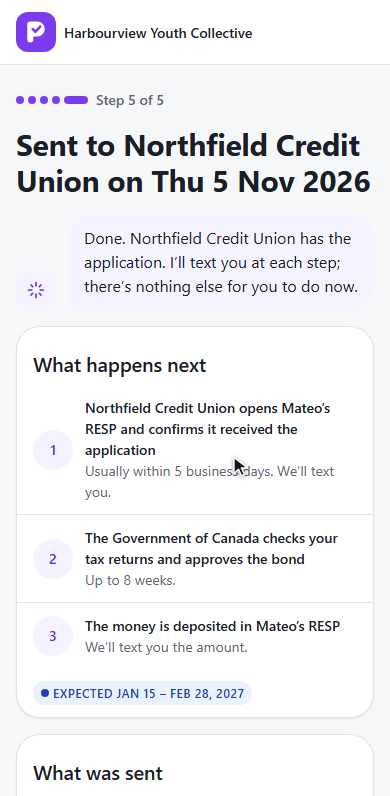
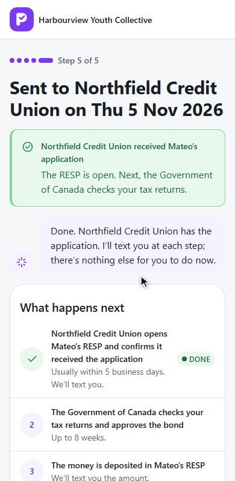
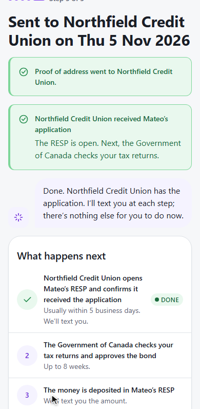
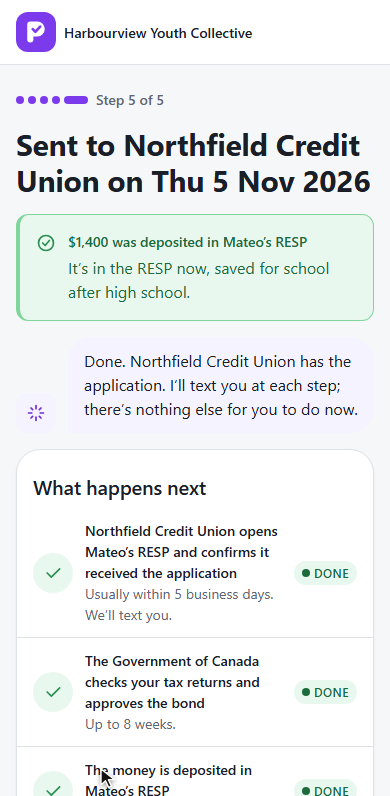
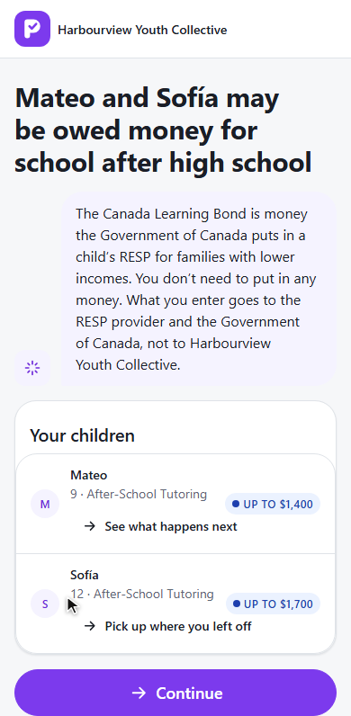
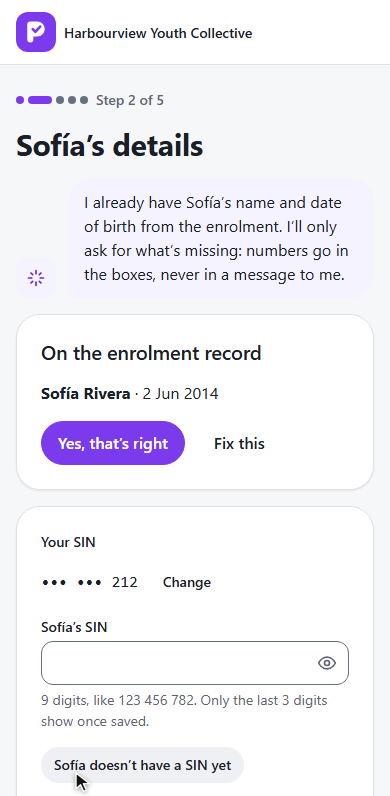

PromiseHub · Video 87
Follow or resume a claim
From Submit to the deposit, and back from a pause to where it stopped
From Submit to the deposit, and back from a pause to where it stopped
L2-150 · L2-151 · ADR 0081
Three steps, the window, the fields.


POST /learning-bond/webhooks/providers/{provider}X-PromiseHub-Signature: sha256=… under the provider's secretLearningBondWebhookHandler · LearningBondProviderEvent · LearningBondGuardianTexter
Chosen, kept, sent on Send; then the deposit.


How to get a SIN, a reminder, and back.


What to do now and the free clinic finder.
LearningBondProgressTests, WebhookTests, DocumentTestsLearningBondPauseTests: reminders, resume, the 180-day closesubmitted and paused specs · laptop and phone · axe
Next: withdraw Learning Bond consent